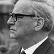
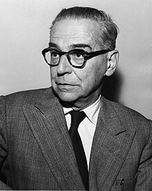

 Иво Андрић (Долац, код Травника, 9. октобар 1892 — Београд, 13. март 1975) био је српски и југословенски књижевник и дипломата Краљевине Југославије. Године 1961. добио је Нобелову награду за књижевност „за епску снагу којом је обликовао теме и приказао судбине људи током историје своје земље”. Као гимназијалац, Андрић је био припадник напредног револуционарног покрета против Аустроугарске власти Млада Босна и страствени борац за ослобођење јужнословенских народа од Аустроугарске монархије.
У аустријском Грацу је дипломирао и докторирао, а време између два светска рата провео је у служби у конзулатима и посланствима Краљевине Југославије у Риму, Букурешту, Грацу, Паризу, Мадриду, Бриселу, Женеви и Берлину. Био је члан Српске академије наука и уметности у коју је примљен 1926. године.

Његова најпознатија дела су поред романа На Дрини ћуприја и Травничка хроника, Проклета авлија, Госпођица и Јелена, жена које нема. У својим делима се углавном бавио описивањем живота у Босни за време османске власти.